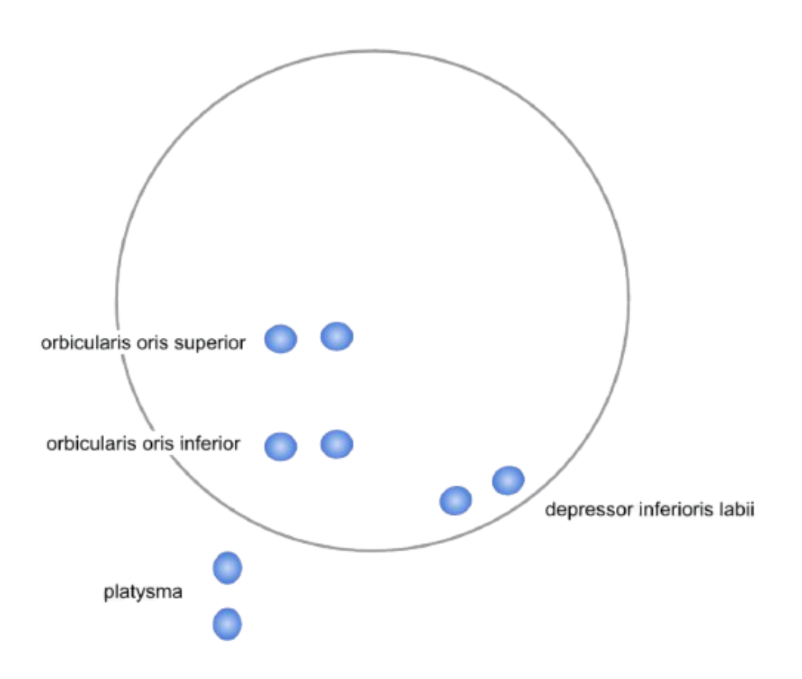

Non-invasive Speech Restoration
Giving Voice to
Those Who've Lost Theirs
VOCL is a non-invasive EMG headset that decodes attempted speech from facial muscle signals, restoring natural communication for people with ALS, aphasia, and dysarthria.

8-channel EMG electrode placement
The Problem
7.5 million Americans live without the ability to speak.
Their brains work perfectly, but failing muscles trap them in silence. Current solutions fail them: AAC tablets cost $10,500 and force users to type at 10-15 words per minute—ten times slower than natural speech. Brain implants offer better results but require invasive surgery and cost $50,000-$100,000, excluding 99% of patients.
3M
with Dysarthria
2M
with Aphasia
30K
with ALS